איך מדווחים
מערכת רכזי החניכות · מהכניסה הראשונה ועד הגשת החודשהמדריך עובר על הדיווח לפי הסדר. ליד כל שלב יש צילומי מסך מקופלים: לוחצים על "צילומי מסך" כדי לפתוח. השמות בצילומים בדויים.
המסלול בקצרה
- כניסה ראשונה: קוד מהמייל, קוד הפעלה, סיסמה ושמירת קוד השחזור
- מעסיקים: מוסיפים מעסיק ומשייכים אליו תלמידים
- בתיק כל תלמיד.ה: ימי העבודה הקבועים ושעות ביום
- דיווח נוכחות: מסמנים ✓ או ✗ בכל יום עבודה
- מה שחורג: הערה, היעדרות באישור, שעות אחרות, יום נוסף, יום בלי תעסוקה
- שליחת הדיווח לכל מגמה, עד ה-15 בחודש הבא
- מעקב: 150 השעות ודוחות
כניסה ראשונה והפעלת המערכת
עושים את זה פעם אחת, בתחילת העבודה. רשימת התלמידים של בית הספר כבר נמצאת במערכת, מוצפנת.
- נכנסים לכתובת tfasim.pedagogiamh.co.il/chanichut.
- מקלידים את שם בית הספר ובוחרים אותו מהרשימה.
- בשדה "מי נכנס.ת" בוחרים רכז.ת החניכות. ליד מופיע המייל שאליו יישלח הקוד, מוסתר בחלקו.
- לוחצים שליחת קוד למייל, ומקלידים את הקוד בן 6 הספרות שמגיע במייל. לא הגיע תוך דקה? בודקים גם בספאם.
- נפתח המסך "בית הספר נכנס לראשונה". מקלידים את קוד ההפעלה, שהגיע במייל נפרד מהמרחב הפדגוגי, ובוחרים סיסמה חדשה: 8 תווים לפחות. לוחצים יצירת הסיסמה.
- מופיע קוד השחזור. לוחצים הדפסה או העתקה, ושומרים אותו במקום נעול.
- מסמנים שמרתי את הקוד ולוחצים כניסה למערכת.
בכניסות הבאות
בית הספר ← רכז.ת החניכות ← קוד מהמייל ← הסיסמה שלכם. שכחתם את הסיסמה? במסך הסיסמה לוחצים שכחתי את הסיסמה, מקלידים את קוד השחזור ובוחרים סיסמה חדשה.
צילומי מסך · 4
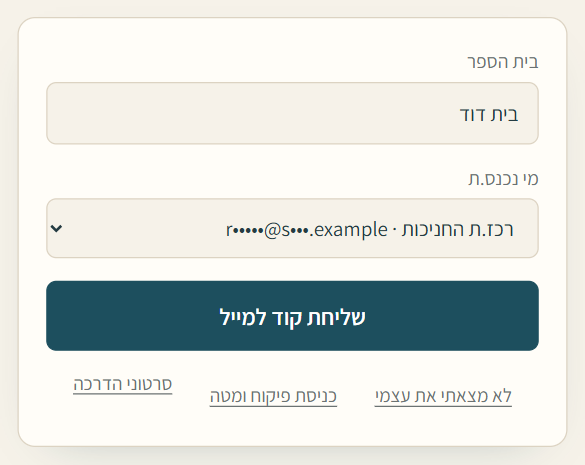
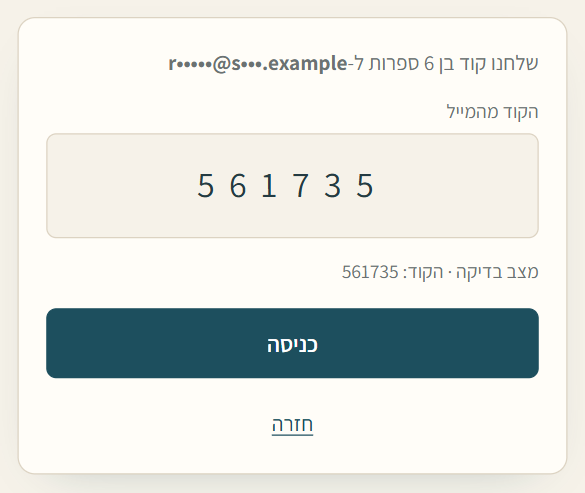
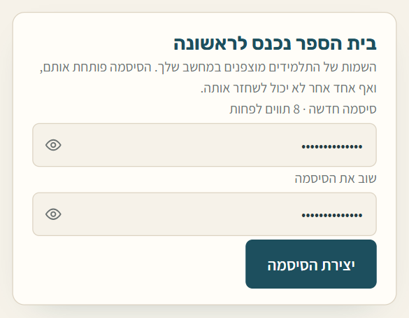
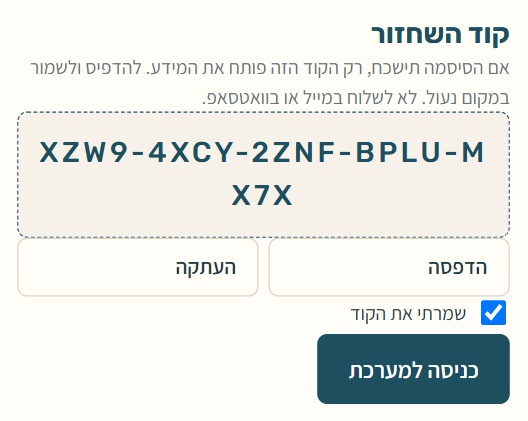
דף הבית
אחרי הכניסה נפתח דף הבית: כמה תלמידים, כמה עובדים, כמה מגמות הגישו, והתעסוקה לפי מגמה. בצד: מה דורש טיפול היום וחניכי - העוזר המושלם.
בתפריט העליון: סקירה, נוכחות, תלמידים, מעסיקים, צ'ק ליסט ו"עוד" (דוחות וניהול). הכפתור דיווח נוכחות נמצא למעלה בכל מסך.
צילום מסך
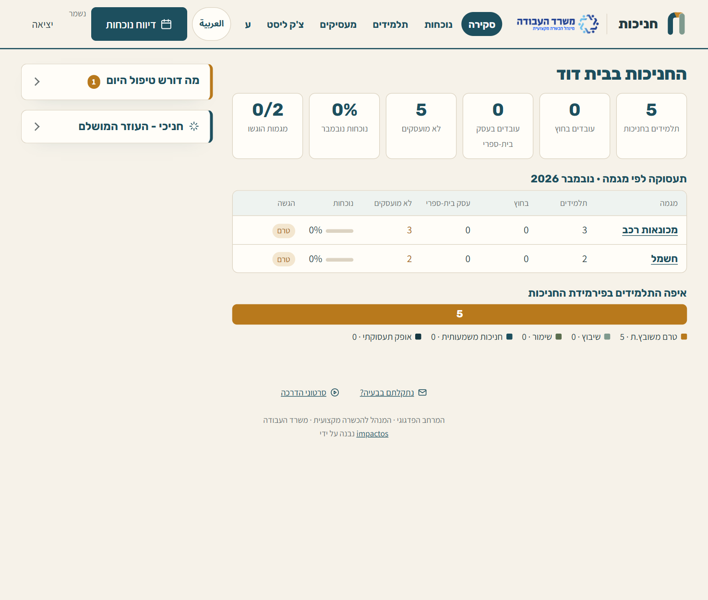
מעסיקים ושיבוץ תלמידים
נוכחות מדווחים רק לתלמיד.ה ששובצ.ה אצל מעסיק או בעסק בית-ספרי. לכן קודם מכניסים את המעסיקים.
- נכנסים למעסיקים ולוחצים מעסיק חדש.
- ממלאים: שם המעסיק, איש.אשת קשר, טלפון, כתובת, מנטור.ית ומייל. מסמנים מגמה וכמה תקנים. רק השם חובה, אבל אם חסרים פרטים המערכת שואלת אם לשמור בכל זאת.
- לוחצים שמירה. המעסיק מופיע ברשימה.
- לוחצים על המעסיק, ובכרטיס שלו על שיוך תלמידים.
- מסמנים מי עובד.ת אצלו (התלמידים מסודרים לפי קבוצה) ולוחצים שמירה.
צילומי מסך · 4
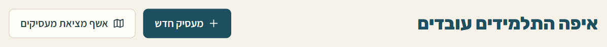
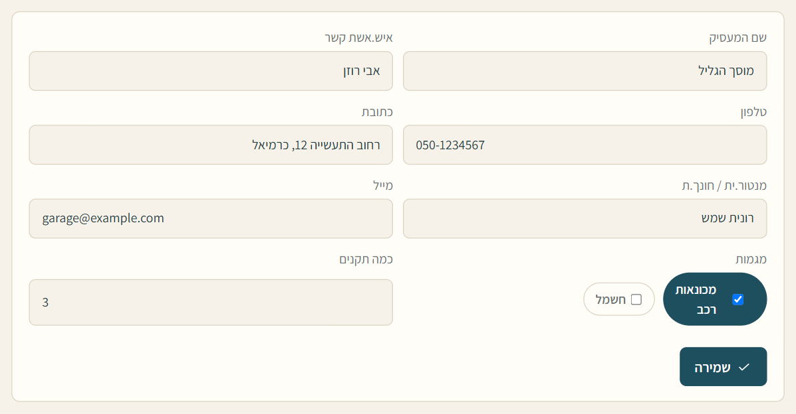
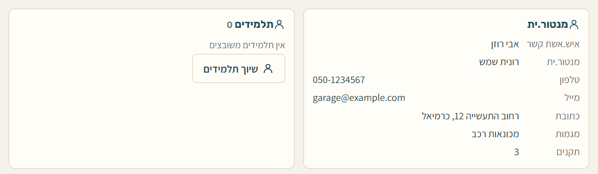
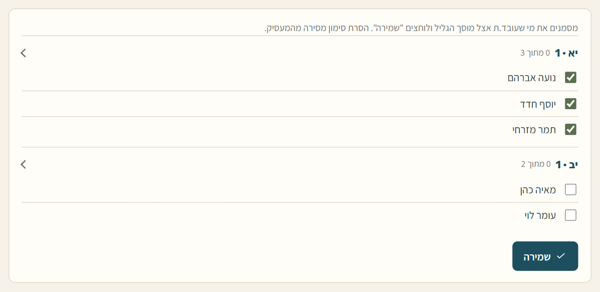
ימי עבודה ושעות בתיק התלמיד.ה
המערכת בונה את ימי הדיווח מהימים הקבועים של כל תלמיד.ה. בלי ימי עבודה אין מה לסמן.
- לוחצים על שם התלמיד.ה (מ"תלמידים" או מכל רשימה) ונפתח התיק.
- בכרטיס ימי עבודה ונוכחות מקישים על הימים הקבועים בשבוע, למשל א׳ וג׳. כל ימי א׳ וג׳ בחודש נוצרים לבד ומוכנים לסימון.
- בשדה שעות ביום עבודה מקלידים כמה שעות עובד.ת ביום. אם הוגדרו שעות ביום אצל המעסיק, הן ברירת המחדל ואין צורך להקליד.
מהימים והשעות המערכת מחשבת לבד את סך השעות בחודש. אין הזנה ידנית של סך השעות.
צילום מסך
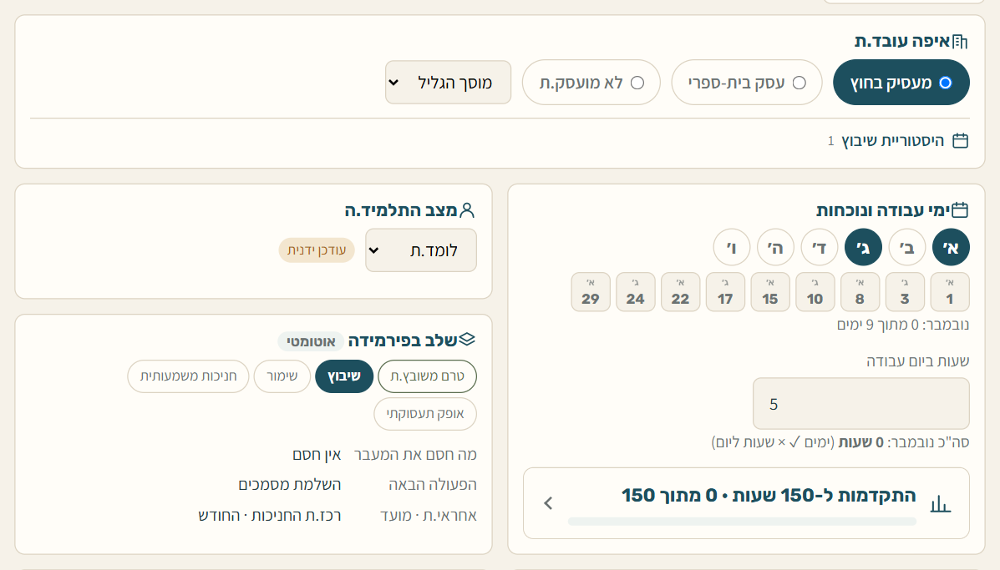
סימון נוכחות
- לוחצים דיווח נוכחות למעלה.
- בחודש הדיווח בוחרים את החודש: הנוכחי, או החודש שעבר אם עוד לא הוגש. אם החודש שעבר עוד פתוח, המערכת מזכירה ומציעה לעבור אליו.
- בוחרים קבוצה או מגמה. אפשר גם לחפש לפי שם, כיתה או מספר פעולה.
- ליד כל תלמיד.ה מופיעים ימי העבודה שלו.ה בחודש. מקישים על היום:
- הקשה אחת = ✓ הגיע.ה
- הקשה שנייה = ✗ לא הגיע.ה
- הקשה שלישית מנקה את הסימון
ימים שעוד לא הגיעו מעומעמים, ואי אפשר לסמן אותם מראש. ליד כל תלמיד.ה מופיע הסיכום: כמה ימים מתוך כמה, וכמה שעות. השמירה אוטומטית.
צילומי מסך · 5
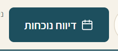
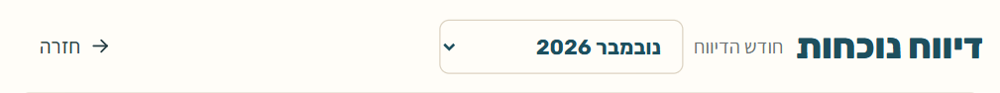
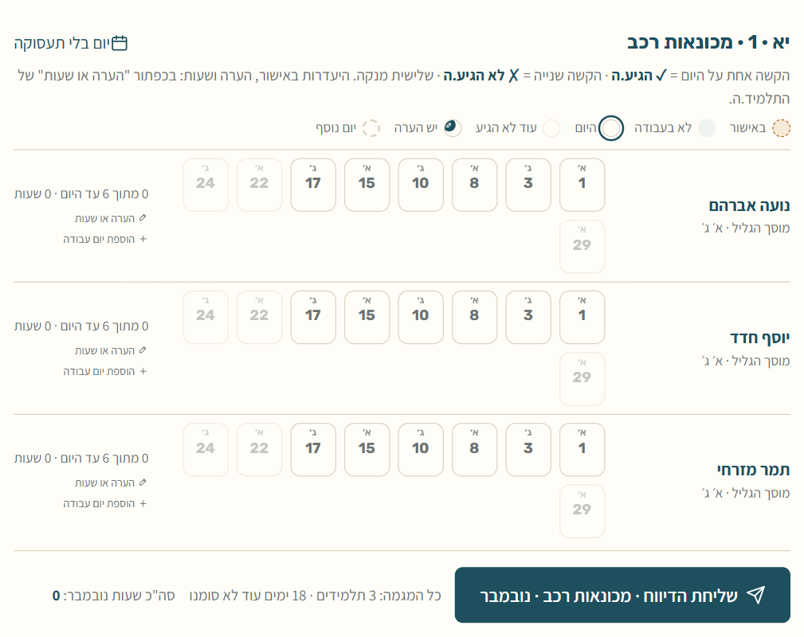
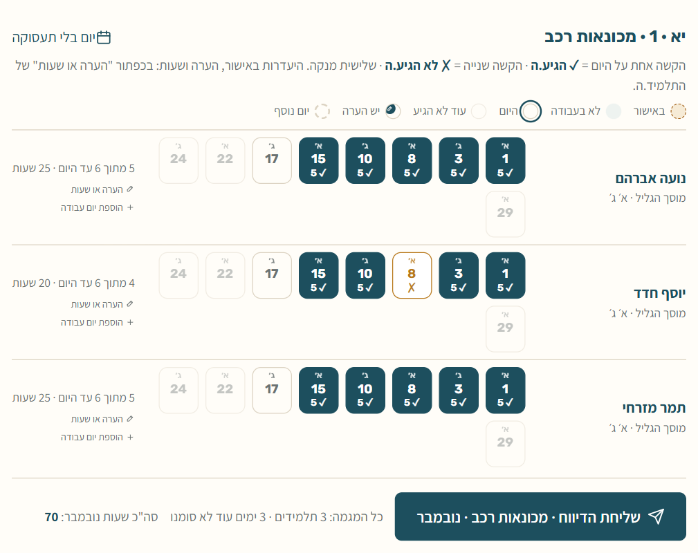
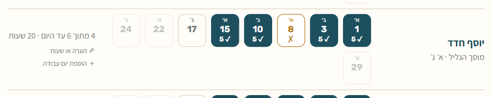
היעדרות באישור, הערה או שעות אחרות
כשיום חורג מהרגיל, לוחצים הערה או שעות בשורת התלמיד.ה. נפתחת רשימת ימי החודש, ולכל יום:
- מצב: הגיע.ה, לא הגיע.ה, או היעדרות באישור (רק מכאן).
- הערה חופשית.
- הגעה ויציאה, או שעות ליום הזה כשהן שונות מהרגיל.
לוחצים סיום. היעדרות באישור מסומנת בצבע אחר, ויום עם הערה מקבל סימן עיפרון קטן.
צילום מסך
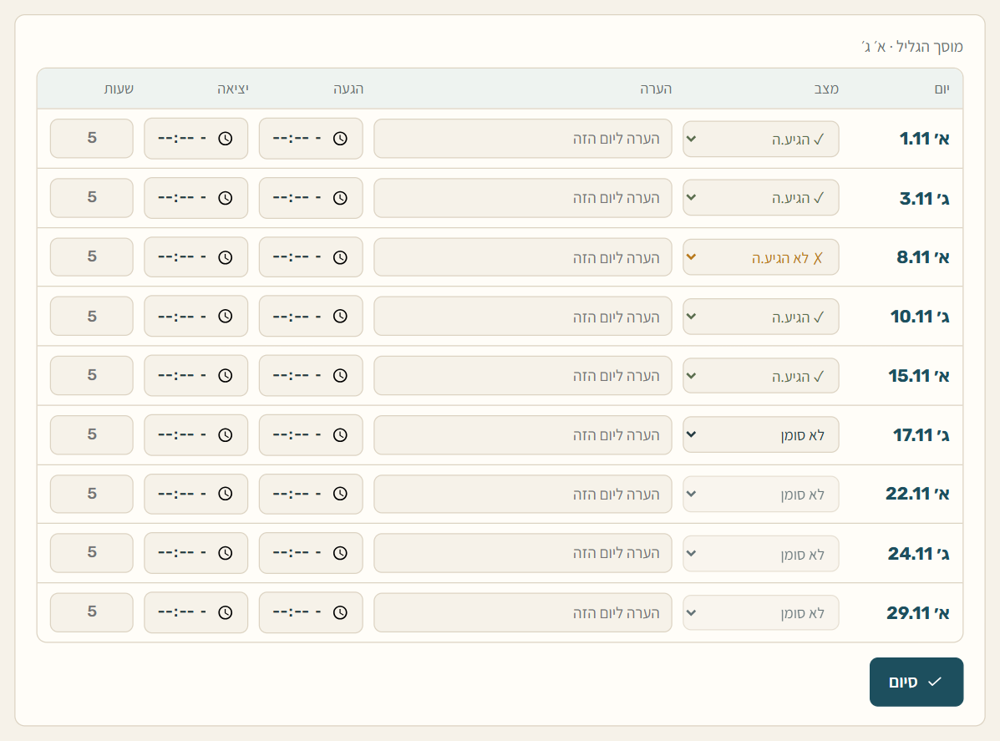
יום עבודה נוסף, שאינו קבוע
תלמיד.ה עבד.ה ביום שאינו מהימים הקבועים? מוסיפים אותו כך שייספר בשעות:
- בשורת התלמיד.ה לוחצים הוספת יום עבודה.
- נפתח לוח החודש. ימי העבודה הקבועים מסומנים, וימים עתידיים חסומים. מקישים על היום.
- מקלידים כמה שעות עבד.ה (חובה). בעסק בית-ספרי מופיעים גם במה עבדו ותעריף לשעה, לדוח השכר.
- שמירה, ואז סיום. אפשר להוסיף כמה ימים באותה כניסה.
היום הנוסף מופיע בשורת התלמיד.ה במסגרת מקווקוות. טעות? פותחים אותו ולוחצים הסרת היום.
צילומי מסך · 2
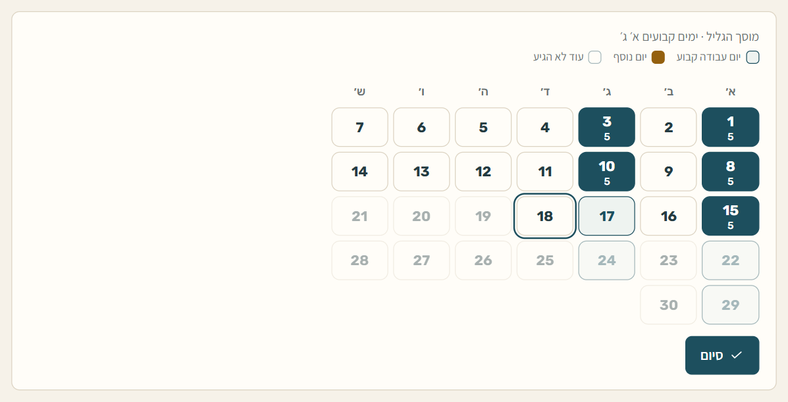
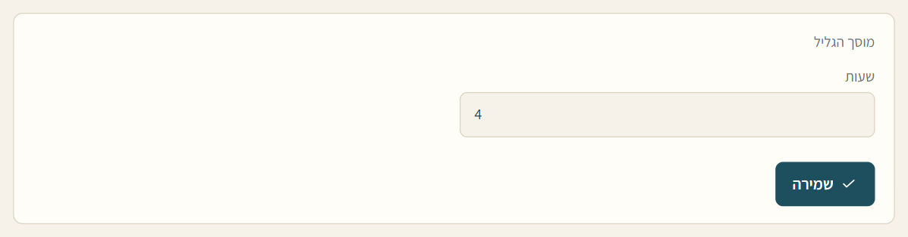
יום בלי תעסוקה לכל הכיתה
טיול שנתי, חג, מרתון בגרויות: יום שבו אף אחד בכיתה לא עבד, ולא צריך להיספר כהיעדרות.
- בוחרים קבוצה אחת במסך הנוכחות ולוחצים יום בלי תעסוקה.
- בוחרים את היום ואת הסיבה, ולוחצים על הכפתור שמחיל על כל הכיתה.
היום יוצא מהדיווח של כל הכיתה ומופיע כתגית. טעות? ה-× על התגית מחזיר אותו.
צילום מסך
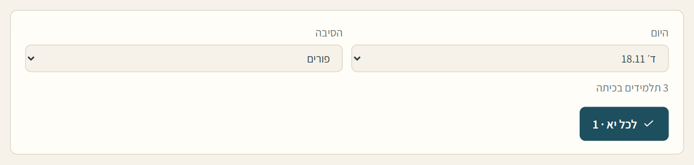
הגשת החודש
כשהחודש מסומן, שולחים את הדיווח. ההגשה היא של כל המגמה, לא רק של הקבוצה שמוצגת.
- בתחתית הרשימה לוחצים שליחת הדיווח · [מגמה] · [חודש]. ליד הכפתור: כמה תלמידים במגמה, כמה ימים עוד לא סומנו, וסך השעות בחודש.
- המערכת מציגה סיכום: כמה תלמידים, כמה ימים עוד לא סומנו ואילו כיתות במגמה. כיתה בלי אף סימון מופיעה באזהרה, כי גם היא תינעל.
- מאשרים. החודש מסומן הוגש וננעל.
צריך לתקן אחרי ההגשה?
לוחצים פתיחה לתיקון ליד "הוגש", מתקנים, ושולחים את הדיווח שוב. עד שלא שולחים מחדש מופיעה הודעה "הדיווח נפתח לתיקון · צריך להגיש שוב".
צילומי מסך · 2
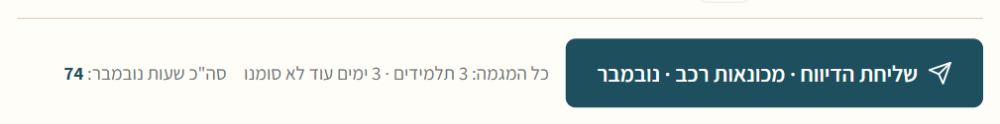
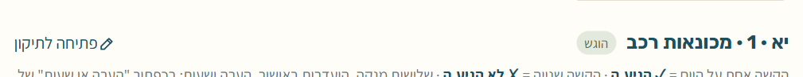
מעקב: 150 השעות ודוחות
150 שעות בשנה
היעד: 150 שעות לתלמיד.ה בשנה, מספטמבר עד יוני. כלומר 15 שעות בחודש, מצטבר. בתיק התלמיד.ה לוחצים התקדמות ל-150 שעות: כמה שעות נצברו, האם בקצב או בפיגור, ופירוט לפי חודשים. הקו בפס מסמן כמה צריך להיות עד היום.
דוחות
עוד ← דוחות:
- דוח תעסוקה חודשי: לכל תלמיד.ה מגמה, מעסיק, ימי עבודה, נוכחות, שעות והגשה. כפתור ייצוא לאקסל. הקובץ נבנה במחשב שלכם, והשמות לא עוברים בשרת.
- דוח חודשי למנהל.ת: מספרים לפי מגמה ושלבי פירמידת החניכות.
- נוכחות לפי ימים: לכל כיתה, מי הגיע.ה בכל יום עבודה בחודש.
- דוח שעות ושכר לחשבת השכר: רק לעסק בית-ספרי.
צילומי מסך · 2
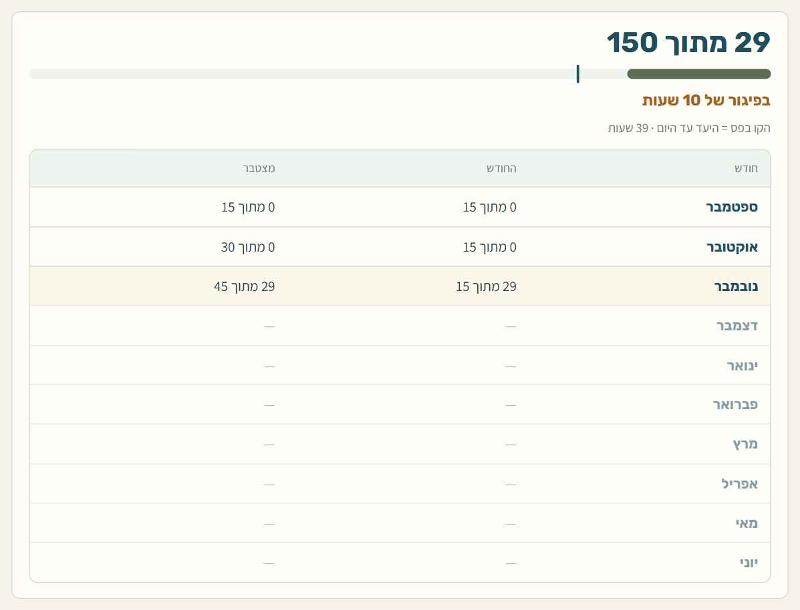
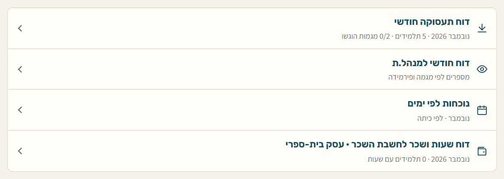
סרטוני הדרכה
10 סרטונים קצרים לפי סדר העבודה, בעברית ובערבית.